My research focuses on the intersection of mathematical biology and applied algebra. In particular, I think about how tools from algebraic geometry, commutative algebra, and combinatorics can be applied to biological questions. The three projects I have been most involved in recently are:
- Combinatorial neural coding,
- Sample frequency spectra in population genetics,
- Algebraic matroids in applications (specifically, matrix completion and rigidity theory.)
Published Articles
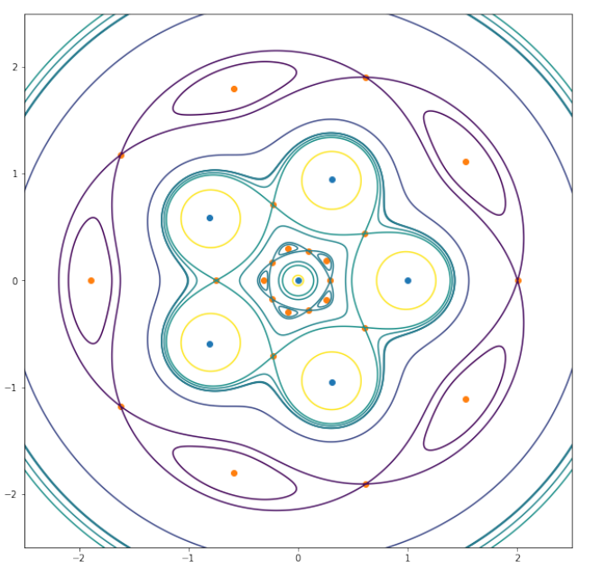
-
On the Number of Equilibria Balancing Newtonian Point Masses with a Central Force
- Nickolas Arustamyan, Christopher Cox, Erik Lundberg, Sean Perry, and Zvi Rosen
- We explore the number of critical points for a potential generated by n Newtonian point masses. We prove that this number is finite for generic parameters, and then use techniques from Morse theory and KKT theory to find concrete bounds on those numbers.
- Journal of Mathematical Physics 62 (11)
- (arXiv| journal)
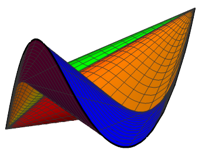
-
Sparse moments of univariate step functions and allele frequency spectra
- Zvi Rosen, Georgy Scholten, and Cynthia Vinzant
- We prove sharp bounds on the number of pieces a piecewise-constant function must have in order to capture any possible moment vector. This has applications in population genetics, where it describes all possible allele frequency spectra.
- Vietnam Journal of Mathematics 50 (2), 523-544
- (arXiv| journal)
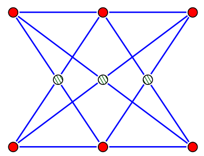
-
Algebraic Matroids in Action
- Zvi Rosen, Jessica Sidman, Louis Theran
- We give a self-contained introduction to algebraic matroids together with examples highlighting their potential application. The American Mathematical Monthly 127 (3), 199-216.
- Winner of the 2021 Merten M. Hasse Prize from the MAA.
- (arXiv | journal)
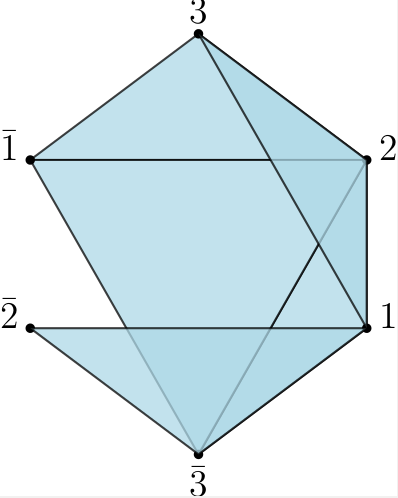
-
Hyperplane Neural Codes and the Polar Complex
- Vladimir Itskov, Alex Kunin, and Zvi Rosen
- We establish several natural properties of non-degenerate hyperplane codes, in terms of the polar complex of the code, a simplicial complex associated to any combinatorial code. We prove that the polar complex of a non-degenerate hyperplane code is shellable and show that all currently known properties of the hyperplane codes follow from the shellability of the appropriate polar complex.
- Topological Data Analysis 343-369, 2020. (Book Chapter)
- (arXiv | book)
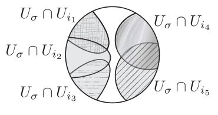
-
Algebraic signatures of convex and non-convex codes
- Carina Curto, Elizabeth Gross, Jack Jeffries,
Katherine Morrison,
Zvi Rosen, Anne Shiu, and Nora Youngs - Using the neural ideal together with its standard generating set, the canonical form, we provide algebraic signatures of certain families of codes that are non-convex. We also provide algebraic signatures for some families of codes that are convex, including the class of intersection-complete codes. Journal of Pure and Applied Algebra, 223(9), 3919-3940, 2019.
- (arXiv | journal)
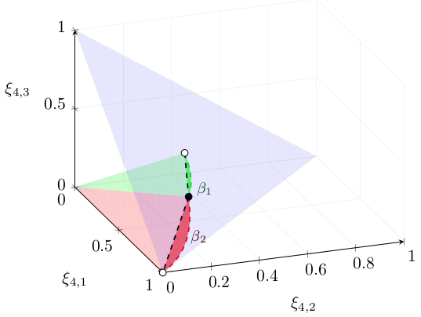
-
Geometry of the sample frequency spectrum and the perils of demographic inference
- Zvi Rosen*, Anand Bhaskar*, Sebastien Roch, Yun S. Song
- The sample frequency spectrum (SFS) is a widely used summary statistic in population genetics, with strong dependence on the historical population demography. This paper uses algebraic and convex geometry to explain difficulties that arise in demographic inference, and to characterize the semialgebraic set of possible spectra.
- Genetics 210(2). 665-682. 2018. (Selected as Highlight)
- (bioRxiv | journal)
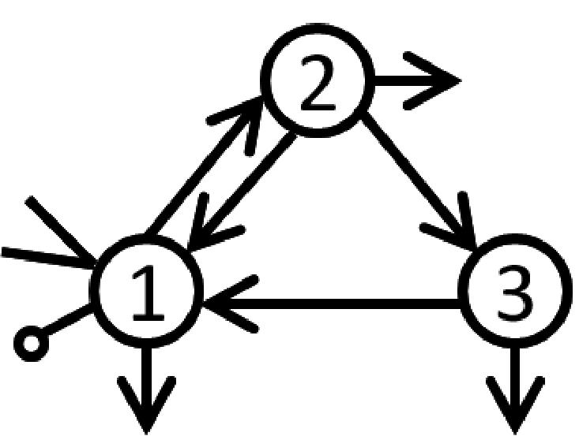
-
Algebraic tools for the analysis of state space models
- Nicolette Meshkat, Zvi Rosen, and Seth Sullivant
- We present algebraic techniques to analyze state space models in the areas of structural identifiability, observability, and indistinguishability. The 50th Anniversary of Gröbner Bases, 171-205, 2018.
- (arXiv | book)
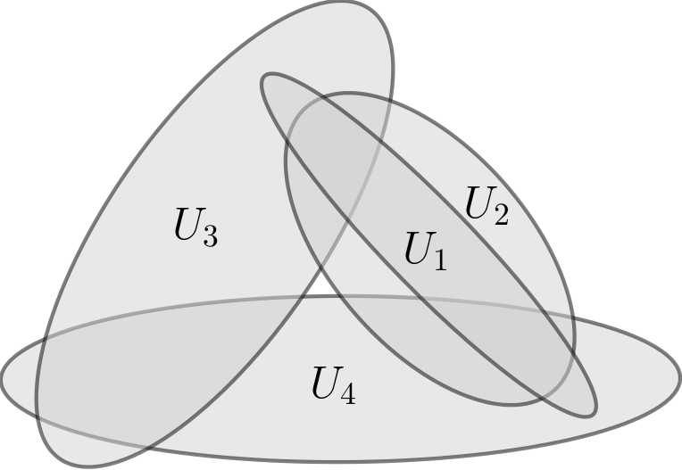
-
What makes a neural code convex?
- Carina Curto, Elizabeth Gross, Jack Jeffries,
Katherine Morrison,
Mohamed Omar, Zvi Rosen, Anne Shiu, and Nora Youngs - Combinatorial codes are convex if codewords correspond to regions defined by an arrangement of convex open sets in Euclidean space. We provide a complete characterization of local obstructions to convexity.
- SIAM Journal on Applied Algebra and Geometry, 1(1), 222-238, 2017.
- (arXiv | journal)
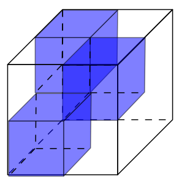
-
The geometry of rank-one tensor completion
- Thomas Kahle, Kaie Kubjas, Mario Kummer, Zvi Rosen
- The semialgebraic and algebraic geometry of projections of rank-one tensors to some of their coordinates is studied, giving insight into the problem of rank-one completion of partial tensors.
- SIAM Journal on Applied Algebra and Geometry, 1(1), 200-221, 2017
- (arXiv | journal)
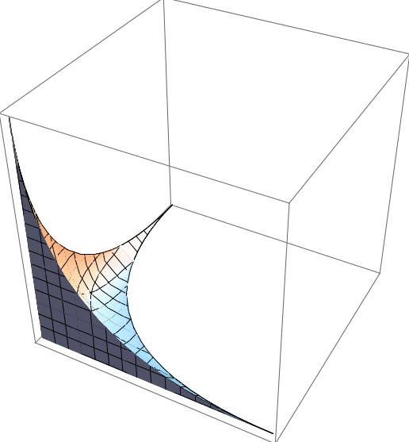
-
Matrix Completion for the Independence Model
- Kaie Kubjas, Zvi Rosen
- We investigate the problem of completing partial matrices to rank-one matrices in the standard simplex. For each pattern of specified entries, we give equations and inequalities which are satisfied if and only if an eligible completion exists.
- Journal of Algebraic Statistics, 8(1), 1-21, 2017.
- (arXiv | journal)
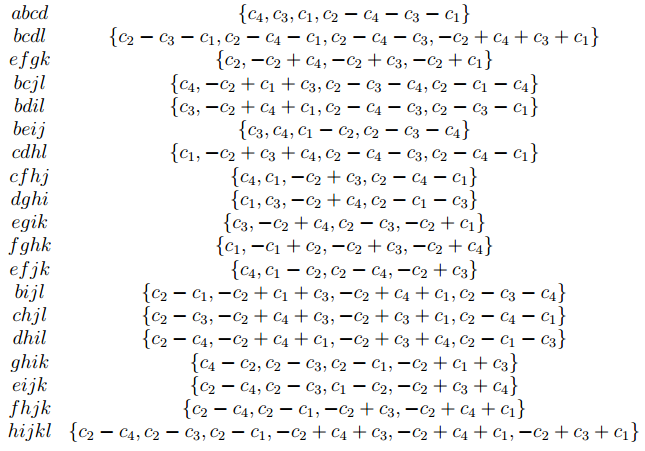
-
Algebraic systems biology: a case study for the Wnt pathway.
- Elizabeth Gross, Heather A. Harrington, Zvi Rosen, Bernd Sturmfels
- Current methods from computational algebraic geometry and combinatorics are applied to analyze the Shuttle model for the Wnt signaling pathway.
- Bulletin of Mathematical Biology, 78, 21-51, 2016.
- (arXiv | journal)

-
Parameter-free methods distinguish Wnt pathway models and guide design of experiments
- Adam L. MacLean, Zvi Rosen, Helen M. Byrne, Heather A. Harrington
- We analyze models of the Wnt signaling pathway, which is involved in adult stem cell tissue maintenance and cancer. Bayesian parameter inference fails to reject models; non-parametric tools including algebraic matroids are employed.
- Proceedings of the National Academy of Sciences, 112(9), 2652-2657, 2015.
- (arXiv | journal)
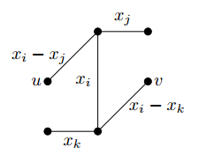
-
Line arrangements modeling curves of high degree: equations, syzygies and secants
- Gregory Burnham, Zvi Rosen, Jessica Sidman, Peter Vermeire
- We study curves consisting of unions of projective lines whose intersections are given by graphs. We discuss property Np for their embeddings, and the subspace arrangements associated to their secant varieties.
- LMS Lecture Notes Series 417: Recent Advances in Algebraic Geometry A Volume in Honor of Rob Lazarsfeld’s 60th Birthday.
- (arXiv | book)
Submitted Articles
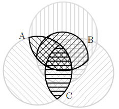
-
Oriented Matroids and Combinatorial Neural Codes.
- Alexander Kunin, Caitlin Lienkaemper, and Zvi Rosen
- We relate the emerging theory of convex neural codes to the established theory of oriented matroids, both categorically and with respect to geometry and computational complexity. In particular, we use oriented matroids to construct codes for which deciding convexity is NP-hard.
- (arXiv)
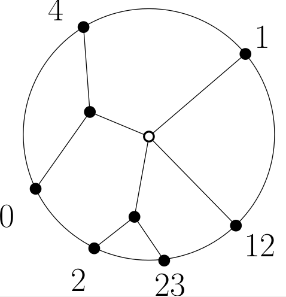
-
Convex Neural Codes in Dimension 1
- Zvi Rosen, Yan X. Zhang
- We study convex neural codes in dimension 1 (i.e. on a line or a circle). We use the theory of consecutive-ones matrices to obtain some structural and algorithmic results; we use generating functions to obtain enumerative results.
- (arXiv)
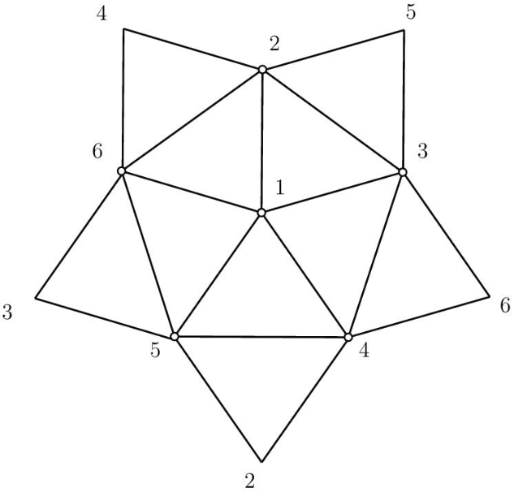
-
Computing Algebraic Matroids
- Zvi Rosen
- We present algorithms for computing algebraic matroids using numerical algebra and symbolic computation. We use these to compute various examples.
- (arXiv)
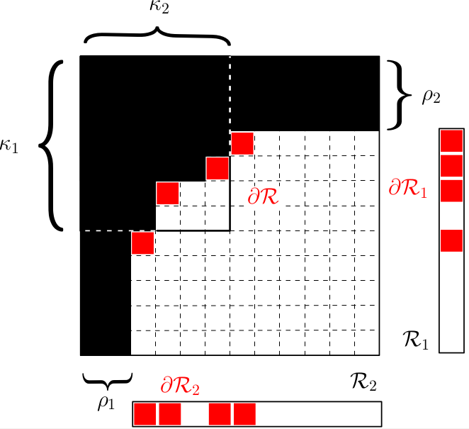
-
Algebraic Matroids with Graph Symmetry
- Franz J. Király, Zvi Rosen, Louis Theran
- We study algebraic matroids whose ground sets are endowed with graph symmetry. These results are motivated by framework rigidity, low-rank matrix completion and determinantal varieties. We define and compute the circuit polynomials associated to the circuits of these matroids.
- (arXiv)